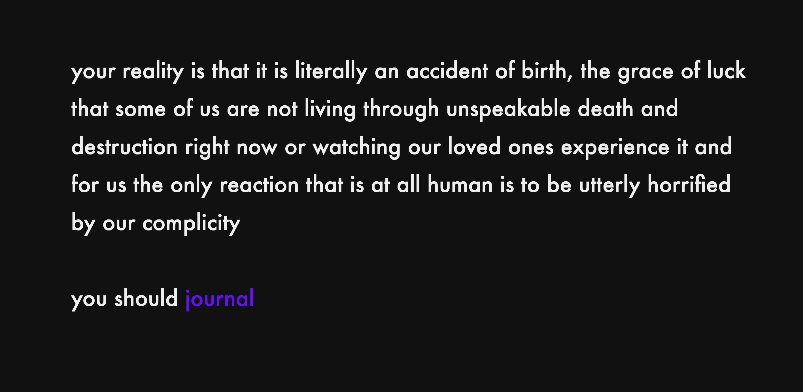
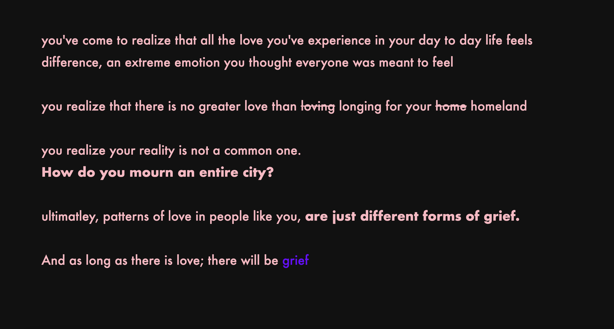
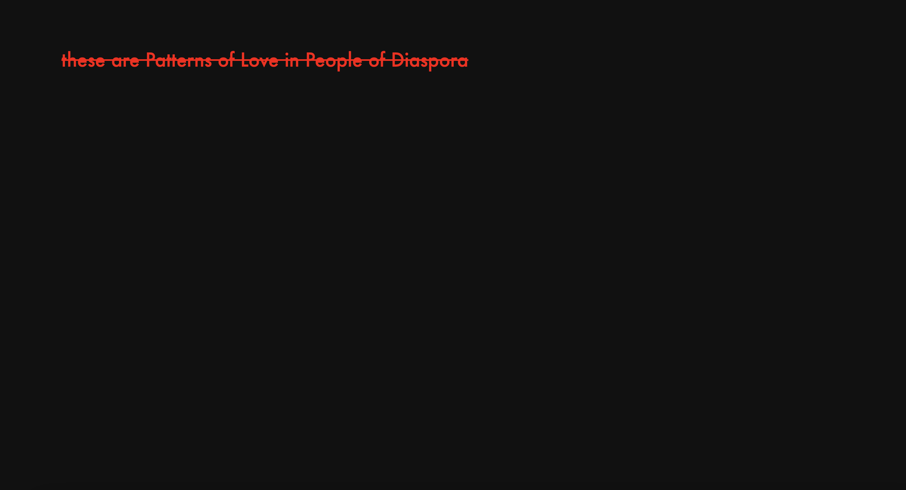
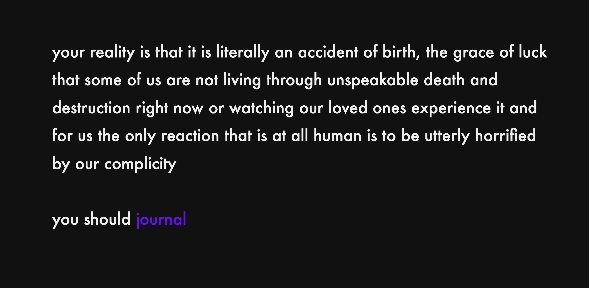
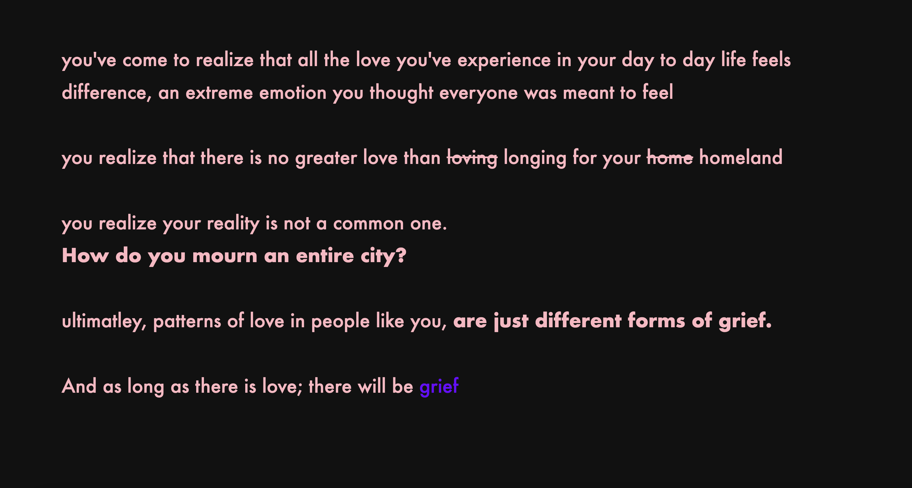
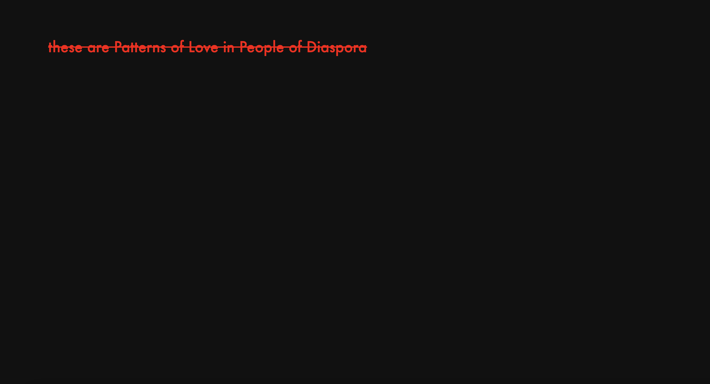

Patterns of Love
Twine, Python
 





An interactive, text-based narrative exploring patterns of love in the diaspora. Built in Twine, the project weaves nonlinear storytelling with branching choices, allowing users to navigate themes of identity, longing, and connection through an immersive digital experience.
play!